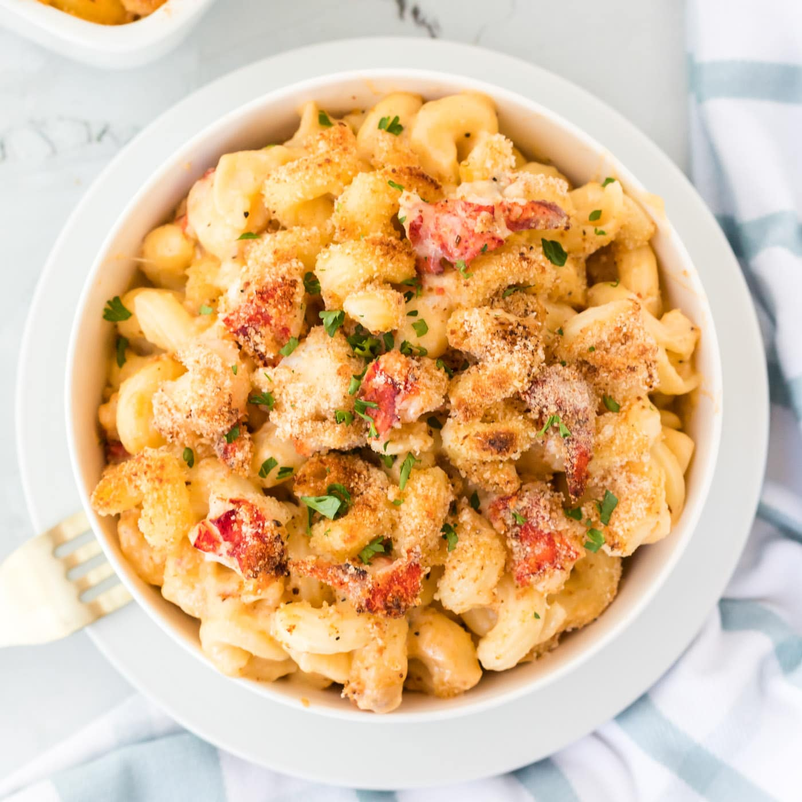

Lobster Mac

Lobster Mac and Cheese is a gourmet version of a family favorite. Everyone will love this rich & creamy casserole with tender lobster!
Ingredients
- salt
- oil
- vegtable oil
- 1 pound cavatappi or elbow macaroni
- 1 quart of milk
- 8 tablespoons of butter
- 1/2 cups of all purpose flour
- 12 ounces of gruyere
- 8 ounces of chedder
- 1/2 teaspoon black pepper
- 1/2 teaspoon nutmeg
- 1 1/2 pound cooked lobster meat
- 1 1/2 cups of fresh white bread crumbs
- Preheat the oven to 375 degrees F.
- Drizzle oil into a large pot of boiling salted water. Add the pasta and cook according to the directions on the package, 6 to 8 minutes. Drain well.
- Meanwhile, heat the milk in a small saucepan, but don't boil it. In a large pot, melt 6 tablespoons of butter and add the flour. Cook over low heat for 2 minutes, stirring with a whisk. Still whisking, add the hot milk and cook for a minute or two more, until thickened and smooth. Off the heat, add the Gruyere, Cheddar, 1 tablespoon salt, the pepper, and nutmeg. Add the cooked macaroni and lobster and stir well. Place the mixture in 6 to 8 individual gratin dishes.
- Melt the remaining 2 tablespoons of butter, combine them with the fresh bread crumbs, and sprinkle on the top. Bake for 30 to 35 minutes, or until the sauce is bubbly and the macaroni is browned on the top.